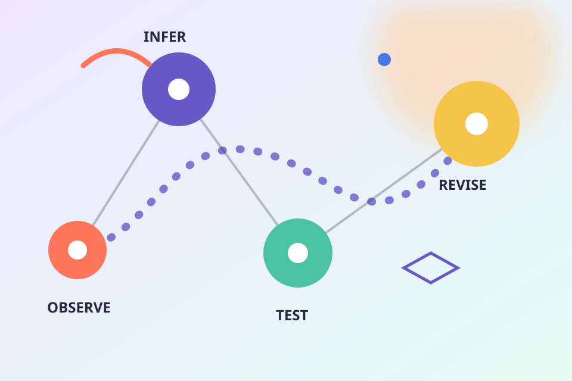

Reasoning, Evidence & Knowledge

1. What makes a conclusion follow?
The first distinction is between a conclusion that must follow and a conclusion that is supported but could be false. The difference concerns the structure of the inference, not the confidence of the person making it.
In deduction, an argument is valid when there is no possible situation in which all its premises are true and its conclusion false. Consider:
Every mammal is warm-blooded. A whale is a mammal. Therefore, a whale is warm-blooded.
The conclusion follows from the premises. Soundness is a stronger property: the argument must be valid and its premises must actually be true. A valid argument with a false premise is not sound, even when its conclusion happens to be true. The standard distinction between deductive and non-deductive inference is set out in OpenStax's Introduction to Philosophy.1
Induction moves beyond what the premises logically guarantee. Observations of a pattern may justify expecting that pattern to continue, but do not deductively entail that it will. If a particular instrument has produced stable readings over many trials, another stable reading is reasonable to expect. A changed calibration or a new operating environment could still defeat the prediction.
Abduction, often discussed as inference to the best explanation, begins with something to explain and compares candidate accounts of it. If a street is wet, rainfall may be one explanation; a street-cleaning vehicle is another. The observation alone does not select one. Explanatory fit, background information, and possible alternative causes matter.2
| Form of inference | What makes the move intelligible? | What does it establish? |
|---|---|---|
| Deduction | The conclusion follows necessarily from the premises | A conditional guarantee, assuming the premises |
| Induction | Observed evidence supports a broader or unobserved claim | Defeasible support, not entailment |
| Abduction | A hypothesis explains the observations better than its rivals | A reason to favour an explanation, not a proof |
These categories describe different relations between premises and conclusions. A scientific argument may combine all three: propose an explanation abductively, deduce a prediction from it, and assess the prediction against observations.
2. Can strong evidence fall short of certainty?
Yes. A piece of evidence can favour a hypothesis without establishing it uniquely. This is not a defect in the evidence; it reflects the difference between support and logical consequence.
Imagine a signal that is more likely under hypothesis \(H\) than under its alternative. Observing the signal raises the relative plausibility of \(H\). But it matters how much more likely the signal is under \(H\), as well as how plausible \(H\) was beforehand.
Bayes' theorem expresses this precisely:
Here \(P(H)\) is the prior probability, \(P(E\mid H)\) the likelihood of the evidence under the hypothesis, and \(P(H\mid E)\) the posterior probability after observing the evidence.3
For an entirely illustrative, not empirical, example, suppose \(P(H)=0.10\), \(P(E\mid H)=0.80\), and \(P(E\mid\neg H)=0.20\). Then
The signal is four times as likely under \(H\) as under its alternative, yet the posterior probability of \(H\) is only about 31%. The example shows why a large likelihood ratio does not, by itself, imply a high posterior probability. The numerical values are hypothetical; their function is to expose the logic of evidence.
This framework is not a universally accepted solution to every epistemological question. Bayesian approaches require priors and likelihoods, and philosophers disagree about their interpretation and justification. They do, however, make explicit a point that informal reasoning often hides: evidence is evaluated relative to hypotheses and background assumptions.3
3. Why doesn't the past prove the future?
David Hume's problem of induction asks what licenses the move from observed regularities to unobserved cases. If the sun has risen every day in recorded experience, what justifies expecting another sunrise? Repetition alone does not make the next event a deductive consequence.
One possible answer is that nature is generally uniform. But how is that principle justified? It cannot simply be a logical truth: a future unlike the past can be described without contradiction. Defending the principle by pointing to the past reliability of induction appears to rely on the very sort of inference under examination.4
Hume's challenge should not be mistaken for the claim that empirical science is useless. It identifies a philosophical gap between deductive proof and empirical expectation. Modern approaches—including probabilistic accounts of confirmation—try to articulate how evidence can support fallible predictions without converting them into logical necessities.
The practical consequence is sharper than blanket scepticism: a claim may be exceptionally well supported while remaining revisable when new evidence, better measurements, or new competing models appear.
4. When is the “best explanation” good enough?
Suppose a plant grows poorly. Insufficient light, damaged roots, nutrient deficiency, or some combination of these could produce the observation. Naming a plausible cause is not yet a satisfactory explanation.
An explanatory comparison proceeds in stages:
- Specify the observation. What exactly varies, and what is being held constant?
- List live alternatives. Which hypotheses could generate that observation?
- Identify discriminating implications. What should differ across hypotheses if each were correct?
- Compare with further evidence. Do new observations favour one account without contradicting its other implications?
- Keep track of auxiliary assumptions. Predictions may depend on assumptions about measurement, background conditions, or the absence of other influences.
This is the structure behind many uses of inference to the best explanation. Philosophers debate which virtues—predictive success, coherence, simplicity, unification, explanatory depth—justify preferring one account, and whether the best available explanation is likely to be true. The best of the explanations considered need not be the best possible explanation; the relevant hypothesis may have been overlooked.2
The distinction is important: a model can fit known facts while being weakly distinguished from an alternative. An additional observation has evidential value when it changes that comparison, not merely when it repeats something both models already predict.
5. Does knowledge require certainty?
Not in every influential account of knowledge. A traditional philosophical proposal treats knowledge as justified true belief: someone knows \(p\) only if \(p\) is true, they believe \(p\), and their belief is justified. That account separates being right from having good grounds for being right.
The proposal is not the final answer. Gettier-style cases suggest that someone may reach a true, apparently justified belief through a form of epistemic luck. The belief is true and supported, yet something about the way it connects to the fact seems inadequate for knowledge. Contemporary epistemology has developed competing responses; there is no single settled analysis accepted by everyone.5
For the purposes of understanding scientific claims, the lesson is not that certainty is always required. It is that several questions must remain distinct:
- Truth: Does the claim correspond to the world?
- Inference: Does the conclusion follow, or how strongly is it supported?
- Justification: What reasons make the belief rational?
- Knowledge: Are those conditions sufficient for someone genuinely to know?
Sources and further reading
The discussion is a synthesis of the references below. Links lead to the original publishers, not to reproduced chapters.
- OpenStax, Introduction to Philosophy, §5.4: Types of Inferences. An accessible introduction to deduction, induction, and abduction.
- Igor Douven, “Abduction,” Stanford Encyclopedia of Philosophy. The philosophical status of inference to the best explanation.
- **“The Problem of Induction,” Stanford Encyclopedia of Philosophy](https://plato.stanford.edu/entries/induction-problem/). Hume's challenge and subsequent approaches.
- **“Bayes' Theorem,” Stanford Encyclopedia of Philosophy](https://plato.stanford.edu/entries/bayes-theorem/). Probabilistic updating and confirmation.
- **“The Analysis of Knowledge,” Stanford Encyclopedia of Philosophy](https://plato.stanford.edu/entries/knowledge-analysis/). Justified true belief and the Gettier problem.
Optional video: Wireless Philosophy — video library provides introductions to reasoning and epistemology.
-
OpenStax, Types of Inferences. ↩
-
Douven, Abduction, especially the general account and debate over its status. ↩↩
-
Bayes' Theorem, Stanford Encyclopedia of Philosophy. ↩↩
-
The Problem of Induction, Stanford Encyclopedia of Philosophy. ↩
-
The Analysis of Knowledge, Stanford Encyclopedia of Philosophy. ↩